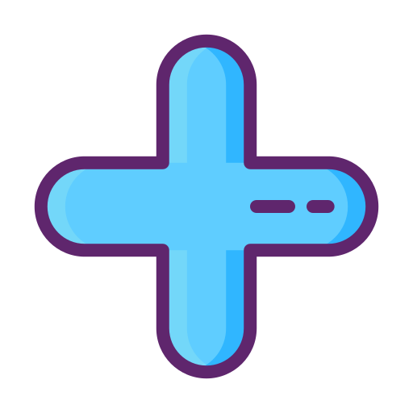

<div class="container">
    <div>
        <button mat-icon-button color="primary" aria-label="Example icon button with a home icon" matTooltip="Crear un proyecto" (click)="openDialog()">
            
        </button>
    </div>
    <div class="container-proyects">
        @for (proyecto of proyectos; track $index) {
            <app-proyecto [proyecto]="proyecto" ></app-proyecto>
        }
    </div>
</div>